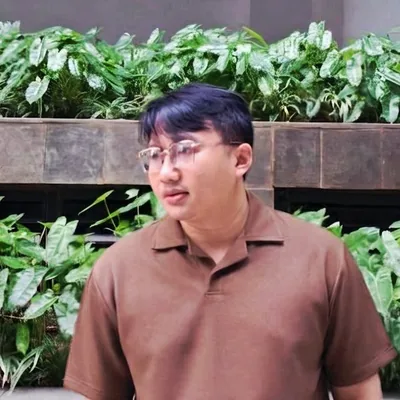
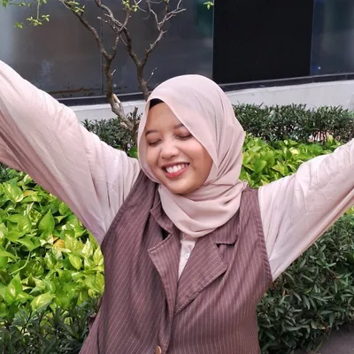
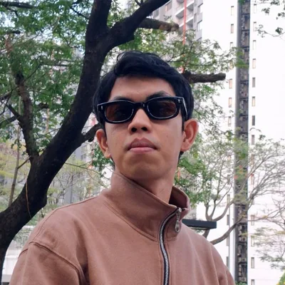

Podcast
Obrolan santai dua mahasiswa psikologi soal kesehatan mental dan hidup anak muda.
Kalau kebahagiaan bisa dibeli, kenapa banyak orang tetap merasa kosong?
Psikologi yang nggak bikin pusing, ngobrolnya ala tongkrongan. Media kecil dari mahasiswa psikologi, biar ilmu psikologi makin dekat dan jauh dari hoaks.
Dengerin di
Pernah nggak sih, nyari tahu soal psikologi malah ketemu hoaks?
Banyak anak muda penasaran sama psikologi, tapi yang gampang ditemuin di sosmed sering setengah benar. Duduk Cerita hadir buat jadi jembatan antara rasa penasaran itu dan ilmu psikologi yang berbasis sains.
Caranya lewat psikoedukasi dari kami, mahasiswa S1 psikologi. Ngomongnya ala temen tongkrongan, tapi tetap pakai sudut pandang psikologi.
DariAnak muda yang penasaran
JadiNgerti ilmu psikologi yang valid
Yang lagi kami bikin
Obrolan santai dua mahasiswa psikologi soal kesehatan mental dan hidup anak muda.
Artikel psikologi yang gampang dicerna dan berbasis sains, bisa dibaca di Medium.
Trivia teori psikologi yang tipis-tipis dan konten pendek hasil potongan dari video lengkap podcast.

Initiator & Coordinator
Lihat profil
Human Resource Manager
Lihat profil
Content Research Lead
Lihat profil